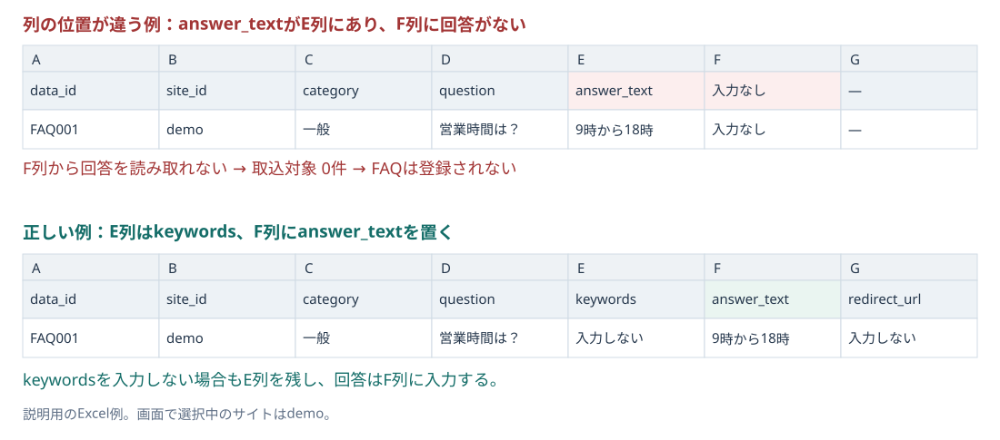
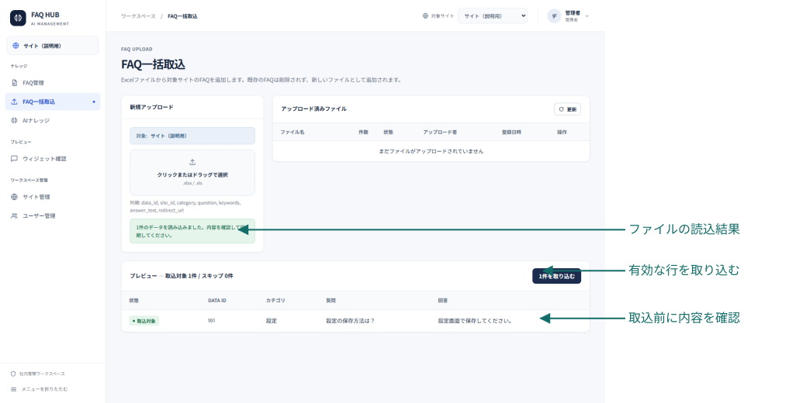
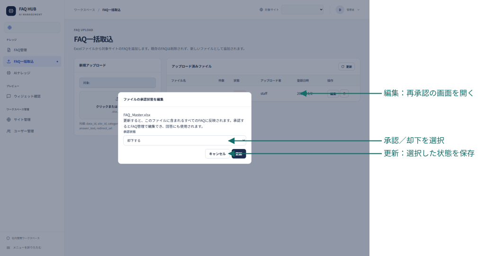

最初のシート：A=data_id、B=site_id、C=category、D=question、E=keywords、F=answer_text、G=redirect_url。
A・D・Fは必須。B・C・E・Gは入力しなくてもよい。B列に入力しない場合は画面で選択したサイトを使い、C列に入力しない場合は「一般」を使う。
1行目を見出しとし、列の位置を維持する。途中の空列を削除しない。G列は省略可。
列の位置が違う場合・入力が足りない場合
質問はD列、回答はF列から読み取ります。列を詰めたり順番を変えたりすると、正しく読み取れない場合があります。見出しの名前だけで列を判定する仕組みではありません。
取込対象が0件の場合、そのファイルからFAQは1件も登録されません。「…件を取り込む」ボタンも表示されません。質問または回答がない行、別サイトの行はスキップします。A列のdata_idに入力していない行は読込対象になりません。
一部の行が有効な場合は、その行だけが取込対象になります。ファイル全体を必ず拒否するわけではありません。取込前にプレビューの対象件数と内容を確認してください。
例：回答をE列に置いてしまった場合

この例では2行ともF列に回答がないため、どちらもスキップされます。E列をkeywords用に残し、回答をF列へ移してください。
そのファイルを選んだときの画面
「取込対象 0件 / スキップ 2件」と表示され、行ごとに「質問または回答が空です」と案内されます。この状態ではFAQは登録されません。上の画面は、説明用のファイルを現在の画面で実際に読み込んだ結果です。
Excelファイルを選択
サイトを選択 → .xlsx / .xlsを選択 → 最初のシートを読み込む → プレビューを表示。この時点ではDBに保存しない。

内容を確認して取り込む
行の内容を確認 → …件を取り込む → 同期中… → 登録・スキップ件数を表示 → ファイル一覧を更新。

重複行はスキップする。取込エラー時はプレビューを残し、再実行できる。
ファイルの再承認 — 管理者
操作 → 編集 → 承認する／却下する → 更新 → ファイル内のFAQにも適用。

スタッフが取込 → 承認待ち。管理者が承認 → 利用可能。却下 → データを残してFAQの編集をロック。キャンセル → 保存せず閉じる。